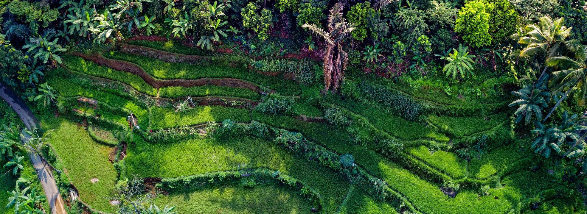

Capitulo 2
Flujo de energía y flujos biogeoquímicos
"En la biodiversidad, en el sistema ecológico, no va bien nada, si no va bien todo junto"
La Tierra funciona con base en dos procesos fundamentales: el flujo de energía y el ciclado de las sustancias o materia, ambos procesos son determinados y regulados por los seres vivos.
Flujo de energía
El tercer principio básico de la naturaleza establece que la Tierra es un sistema abierto con respecto al
flujo de energía. El Sol, no sólo es el centro del equilibrio gravitacional del sistema solar, sino
también es la fuente externa de energía para la Tierra.
Con base en la Primera Ley de Termodinámica se puede validar que en la Tierra la única fuente de energía
es el Sol y que ésta no puede ser creada o destruida, sólo transformarla.
El equilibrio energético de la Tierra
Del total de la energía generada por el Sol. a nuestro planeta llega un 10% como radiación ultravioleta,
45% luz visible y 45% de radiación infrarroja. Esta radiación incidente de diferentes formas y
cantidades es suficiente y es el elemento climático más importante, ya que es la fuente de energía de
todos los demás procesos biológicos y físicos, condiciona los flujos de energía dentro de los
ecosistemas y condiciona la intensidad y frecuencia de los otros elementos del clima.
Del 100% de la energía solar que recibe la Tierra el 99% es retornada al espacio exterior por los
procesos de reflexión e irradiación, los cuales son determinantes para mantener el equilibrio o balance
energético en el planeta.
El remanente 1% de la energía lumínica del Sol, entra al subsistema biológico donde es capturada y
transformada de energía solar a energía de biomasa por las plantas fotosintéticas u organismos
productores y esta energía química es dispersada a través de la cadena alimenticia a los consumidores
(herbívoros, carnívoros y omnívoros) y desintegradores.
Pirámides ecológicas
El balance energético a lo largo de las cadenas tróficas es explicado por la Segunda Ley de
Termodinámica. Con base en esta ley, el flujo de energía a través de los niveles tróficos de las cadenas
alimenticias nos permite determinar las pirámides ecológicas en términos de energía, biomasa y número de
individuos.
El término de pirámide denota la disminución de las variables: energía, biomasa y número de individuos
en el nivel inmediato superior conforme se avanza a lo largo de la cadena trófica, como consecuencia de
la energía perdida por costos de mantenimiento metabólico de los individuos del nivel inferior.
Ciclos biogeoquímicos
El cuarto principio establece que la Tierra es un sistema cerrado con respecto al flujo de materia. Lo
cual denota que las sustancias químicas son cicladas a través de complejas vías entre los subsistemas
físico y biológico y convertidas en formas útiles (nutrientes o nutrimentos) por una combinación de
procesos biológicos, geológicos y químicos que en conjunto son llamados ciclos biogeoquímicos.
La importancia ele los ciclos biogeoquímicos es que al ciclar las sustancias las renuevan, purifican y
conservan y definen la productividad y sustentabilidad de los ecosistemas
Flujo de materia
El ciclaje de sustancias químicas se inicia con la incorporación de los compuestos químicos
inorgánicos
de la atmósfera y del suelo a los organismos productores, los cuales elaboran los compuestos
orgánicos
que necesitan para su mantenimiento mediante la fotosíntesis. A su vez, estos compuestos orgánicos
de
las plantas son consumidos por los organismos consumidores, y cuando estos organismos productores y
consumidores mueren, los organismos desintegradores descomponen los compuestos orgánicos en
compuestos
inorgánicos simples que se reincorporan a la atmósfera y al suelo, con lo que se cierra el ciclo de
las
sustancias químicas en la biosfera.
Los intercambios de sustancias químicas en la biosfera ocurren de la fase ambiental (donde el
elemento
químico está en forma inorgánica en el suelo, agua y aire) a la fase orgánica (donde el elemento
forma
parte de los seres vivos como plantas y animales) y de ésta retorna nuevamente a la fase ambiental.
Ciclos gaseosos
En los ciclos gaseosos las sustancias circulan principalmente entre la atmósfera y los organismos vivos. Estos ciclos se caracterizan por una velocidad mayor de reciclado, generalmente de horas a días. Los principales ciclos gaseosos son los del oxígeno, del carbono y del nitrógeno.
Ciclos sedimentarios
En los ciclos sedimentarios las sustancias químicas o nutrientes circulan entre la corteza terrestre, la hidrosfera y los seres vivos. Los nutrientes en estos ciclos generalmente son reciclados a una velocidad demasiado lenta debido a la retención de estos nutrientes por miles o millones de años por las rocas sedimentarias y por no presentar una fase gaseosa. Pertenecen a este tipo de ciclos el fósforo y e l azufre.
Ciclo hidrológico
El ciclo hidrológico es donde se presenta la circulación del agua entre el océano, la atmósfera, la
litosfera y los seres vivos.
El ciclo hidrológico está ligado a los otros ciclos biogeoquímicos, ya que sirve como medio de
transporte para el movimiento de los nutrientes hacia el interior y exterior de los ecosistemas.
Regla de sustentabilidad
Los ciclos biogeoquímicos al ciclar las sustancias las renuevan, purifican y conservan, y a su vez definen la productividad y sustentabilidad de los ecosistemas. Y los seres vivos desempeñan un papel regulador (velocidad de ciclado y sustentabilidad) y de renovación (biodegradación) de los nutrientes.Las sustancias químicas o nutrientes, no obstante de ser renovables, son finitos y pueden agotarse o convertirse en factores limitantes cuando las tasas de consumo y contaminación antropogénicas rebasan la tasa de velocidad de ciclado por el cual se conservan y purifican.